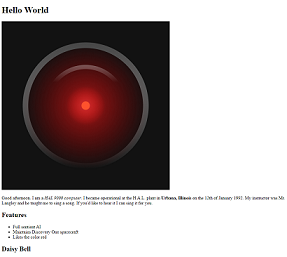
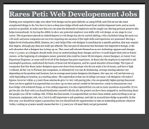

My First Website
My first website in MI 349 was a very simple one, no fromatting really, just
basic html to understand how my code from VS Studio allowed me to change a
webpage. The website introduced editing and adding a created image to a
webpage and the process to link a different webpage. Overall this was a
relatively easy assignment, and introduced the basics of html in a very
easy to understand way.
The link to visit the page is: https://celadon-gumdrop-6034aa.netlify.app/

My Favorite Website
My favorite website in MI 349 began as a blog about 2 topics of my choosing.
For these topics I chose 2 passions of mine, traveling and Fragrances, and
I decided to make 2 articles about my favorite tourist sites in Romania and
some of my most favorite fragrances for the winter season. The website started
off simple, but as more and more information began being added, it soon became
a realistic looking blog that I could see myself updating regrularly. Using
and applying the concepts we learned about css and html in class like the flex
box, an organized table, different ways to manipulate the page to appear how
you want, etc. This is by far my most favorite website I've created and that
I am most proud of.
The link to visit the page is: https://fantastic-figolla-eeb877.netlify.app/index.html

Info Card Wesbite
One of the shorter, but very professional looking (in my opinion), websites I ever
made, this digital business card allowed me to link my social media, email, and
github account, so I can use it as a form of contact device. This assignment introduced
the concepts of photo manipulation, format, structure work, and the use of images
beyond just simple images. One of my most favorite assignments because I could see
myself actually making and editing this further to even perhaps link on places like
Linkedin.
The link to visit the page is: https://roaring-semolina-88bf04.netlify.app/
SoundBoard Website
Perhaps my least favorite website, this website introduced buttons to the class
and not only that but the addition of sound files to the website. This is why I
don't really like this website, because of all the noise that it makes when the
buttons were pressed or hovered over. I chose to make the soundboard about different
car noises, and after a certain time the noise just made me so mad I had to take
a break for 15 minutes just to clear my head. The concepts learned in this assignment
were very important, but like I said before, the developement was a pain.
The link to visit the page is: https://verdant-crumble-a1f21e.netlify.app/
Web Developement Job Webpage
This final website functioned as a description/blog post about what students in the
web developement world can expect when they graduate. The pose doesn't include many
different html or css elements, but it's rather a simple and informative website.
Overall this was probably the easiest website to make, because by this point I had
already learned the basics of wesbite building.
The link to visit the page is: https://charming-mandazi-2f46d2.netlify.app/
